Funkcja kwadratowa
W kartezjańskim układzie współrzędnych \((x, y)\) przedstawiono fragment paraboli, która jest wykresem funkcji kwadratowej \(f\) (zobacz rysunek). Wierzchołek tej paraboli ma współrzędne \((3, 6)\). Ta parabola przecina oś \(Oy\) w punkcie \((0, 3)\).
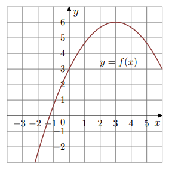Osią symetrii wykresu funkcji \(f\) jest prosta o równaniu
W kartezjańskim układzie współrzędnych \((x, y)\) wykresem funkcji kwadratowej \(f\) jest parabola, której wierzchołkiem jest punkt \((3, 0)\). Ta parabola przechodzi przez punkt \((0, -9)\).
Funkcja \(f\) jest malejąca w przedziale
Uzupełnij zdanie. Wybierz dwie właściwe odpowiedzi spośród oznaczonych literami A – F i wpisz te litery w wykropkowanych miejscach.
Wzór funkcji \(f\) zapisano w odpowiedziach oznaczonych literami: oraz .
Funkcja \(g(x) = f(x) - 1\). Oceń prawdziwość stwierdzeń:
Funkcja \(g\) ma jedno miejsce zerowe.
Osią symetrii wykresu funkcji \(g\) jest prosta \(x = 3\).
W kartezjańskim układzie współrzędnych (x, y) przedstawiono fragment paraboli, która jest wykresem funkcji kwadratowej f (zobacz rysunek). Wierzchołek tej paraboli oraz punkty przecięcia paraboli z osią Ox układu współrzędnych mają obie współrzędne całkowite.
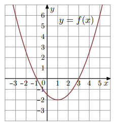Zbiorem wartości funkcji \( f \) jest przedział
Osią symetrii wykresu funkcji \( f \) jest prosta o równaniu
Funkcja \( f \) jest określona wzorem
Funkcja kwadratowa \( f \) jest określona wzorem \( f(x) = -(x + 1)^2 + 4\).
Na jednym z rysunków A–D przedstawiono fragment wykresu funkcji \(y=f(x)\). Który rysunek odpowiada tej funkcji?

Oceń prawdziwość stwierdzeń dla funkcji \( f(x) = -(x + 1)^2 + 4\).
1. Wykres funkcji \( f \) przecina oś \(Oy\) w punkcie o współrzędnych \((0,4)\).
2. Miejsca zerowe funkcji \( f \) są równe: \(-3\) oraz \(1\).
Fragment paraboli; wierzchołek i punkty przecięcia z osiami mają całkowite współrzędne.
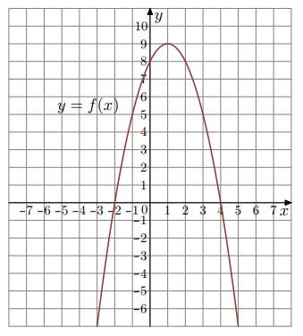Funkcja kwadratowa \( f \) jest określona wzorem
Dla funkcji \( f \) prawdziwa jest równość
Fragment wykresu paraboli z całkowitymi współrzędnymi wierzchołka i przecięć.
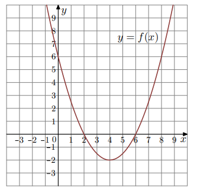Zbiorem wartości funkcji \( f \) jest przedział
Wzór funkcji \( f \) można zapisać jako: oraz .
Funkcja \( g \) jest określona wzorem \( g(x) = f(x+1) \). Który rysunek przedstawia jej wykres?
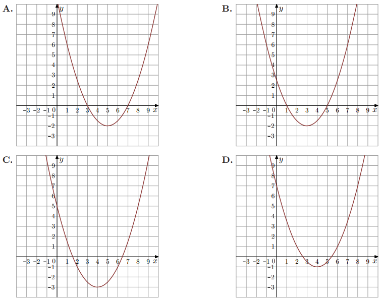Przedział \((-\infty,2)\) jest zbiorem wartości funkcji oraz .
Funkcja \( f(x) = ax^2+bx+1 \), gdzie \(a<0\) i \(b>0\). Który rysunek przedstawia wykres tej funkcji?
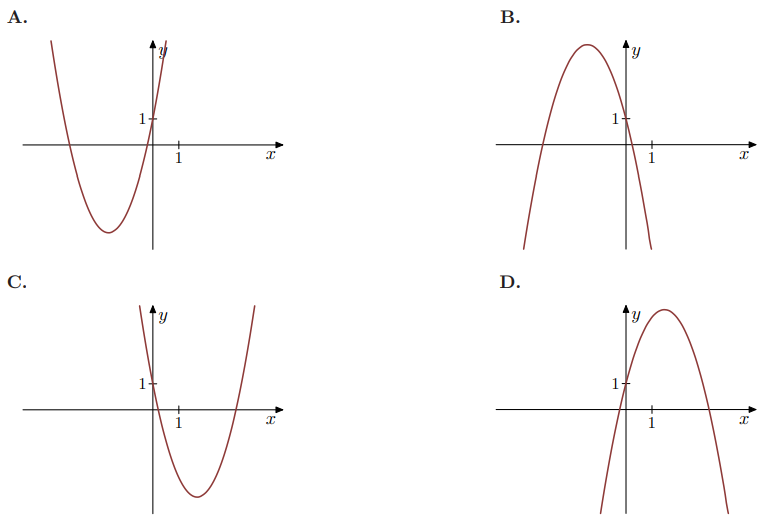Jednym z miejsc zerowych funkcji jest \(-5\). Oś symetrii paraboli ma równanie \(x=3\). Drugim miejscem zerowym jest
Dana jest funkcja kwadratowa \( f(x)=ax^2+bx+c \), gdzie \(a\neq 0\), \(c<0\). Funkcja nie ma miejsc zerowych. Dokończ zdanie: Wykres \( f \) leży w całości
Uzasadnienie:
Funkcja kwadratowa \( f \) jest określona wzorem \( f(x)=-(x+1)^2+2\).
Wierzchołek paraboli ma współrzędne
Zbiorem wartości funkcji \( f \) jest przedział
Funkcja \(f(x)=x^2+bx+c\) osiąga dla \(x=2\) wartość najmniejszą równą 4. Wtedy
\(f(x)=-2(x-2)(x+1)\). Funkcja \(f\) jest rosnąca w zbiorze
Na rysunku przedstawiono fragment wykresu funkcji kwadratowej f określonej wzorem \(f(x)=2x^2+5x\).
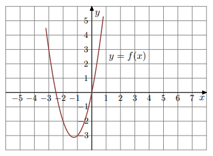
Osią symetrii wykresu funkcji jest prosta
\(f(x)=-2(x-1)^2+3\) jest rosnąca w przedziale
\(f(x)=3x^2+bx+c\) ma wierzchołek \(W=(-3,2)\). Wzór w postaci kanonicznej to
\(f(x)=-3(x+4)(x-2)\). Wierzchołek \(W=(p,q)\). Wtedy
Fragment paraboli: jedno miejsce zerowe \(x=2\), punkt \((0,3)\) należy do wykresu, oś symetrii \(x=-2\).
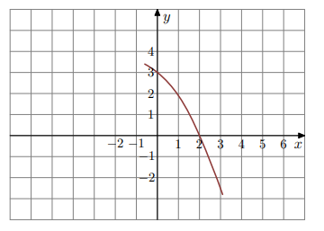Drugim miejscem zerowym funkcji \( f \) jest liczba
Wartość funkcji \( f \) dla argumentu \(-4\) jest równa
\(f(x)=-2(x+1)(x-3)\). Funkcja jest malejąca w przedziale
\(f(x)=-(x+9)^2+m\) ma zbiór wartości \((-\infty,-5]\). Wtedy
Osią symetrii wykresu funkcji kwadratowej \( f(x) = \tfrac{1}{3}x^2 + 4x + 7 \) jest prosta o równaniu
Na rysunku poniżej przedstawiono fragment wykresu funkcji kwadratowej \( f(x) = ax^2 + bx + c \).
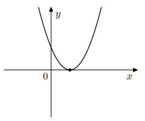Stąd wynika, że
Wykresem funkcji kwadratowej \( f(x) = -x^2 + 6x + 4 \) jest parabola o wierzchołku w punkcie \((3,q)\). Liczba \(q\) jest równa
Na rysunku poniżej przedstawiono fragment wykresu funkcji kwadratowej \( f(x) = ax^2 + bx + c \).
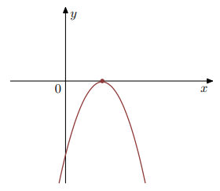Stąd wynika, że
Funkcja kwadratowa f jest określona wzorem \( f(x) = a(x-1)(x-3) \). Na rysunku przedstawiono fragment paraboli będącej wykresem tej funkcji. Wierzchołkiem tej paraboli jest punkt\(W=(2,1)\).
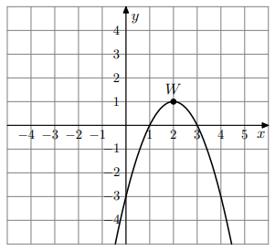Współczynnik \(a\) we wzorze funkcji \(f\) jest równy
Największa wartość funkcji \(f\) w przedziale \([1,4]\) jest równa
Osią symetrii paraboli będącej wykresem funkcji \(f\) jest prosta o równaniu
Miejscami zerowymi funkcji \(f\) określonej wzorem \(f(x)=9-(3-x)^2\) są liczby
Na rysunku przedstawiono fragment paraboli będącej wykresem funkcji kwadratowej \(g\). Wierzchołkiem tej paraboli jest punkt \(W=(1,1)\).
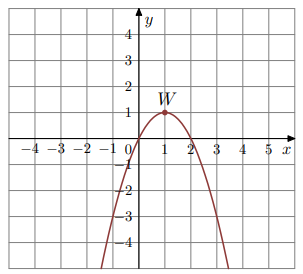Zbiorem wartości funkcji \(g\) jest przedział
Na rysunku przedstawiony jest fragment paraboli będącej wykresem funkcji kwadratowej f. Wierzchołkiem tej paraboli jest punkt W = (2, −4). Liczby 0 i 4 to miejsca zerowe funkcji f.
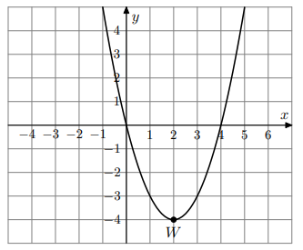Zbiorem wartości funkcji \(f\) jest przedział
Największa wartość funkcji \(f\) w przedziale \([1,4]\) jest równa
Osią symetrii wykresu funkcji \(f\) jest prosta o równaniu
Wykresem funkcji \(f(x)=x^2-2x-11\) jest parabola, której wierzchołkiem jest punkt o współrzędnych
Funkcja kwadratowa jest określona wzorem \(f(x)=-3(x-2)(x-9)\). Liczby \(x_1,x_2\) są różnymi miejscami zerowymi funkcji \(f\). Zatem
Największą wartością funkcji \(y=-(x-2)^2+4\) w przedziale \([3,5]\) jest
Największą wartością funkcji \(y=-(x-2)^2+4\) w przedziale \([3,5]\) jest
Na jednym z rysunków przedstawiono fragment wykresu funkcji kwadratowej określonej wzorem \(f(x)=-(x-1)(3-x)\). Wskaż ten rysunek.
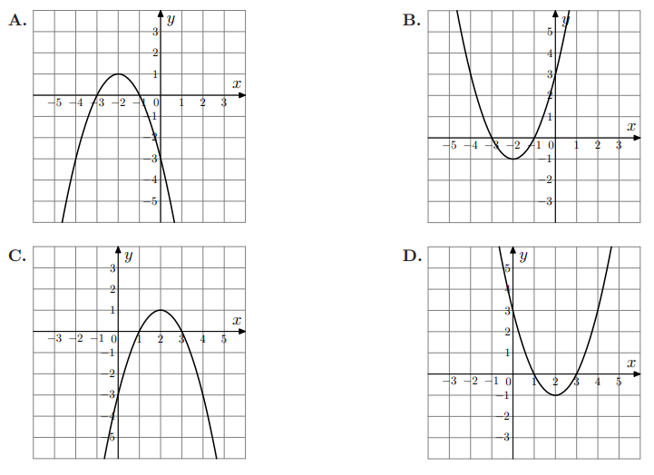Funkcja kwadratowa jest określona wzorem \(f(x)=-2(x+3)(x-5)\). Liczby \(x_1,x_2\) są różnymi miejscami zerowymi funkcji \(f\). Zatem
Wykres funkcji \(f(x)=x^2-6x-3\) jest parabolą, której wierzchołkiem jest punkt o współrzędnych
Na rysunku przedstawiono fragment wykresu funkcji kwadratowej \(f(x)=ax^2+bx+c\).
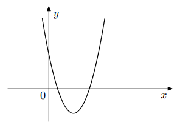Współczynniki \(b\) i \(c\) spełniają warunki:
Funkcja kwadratowa \(f(x)=x^2+bx+c\) oraz \(f(-1)=f(3)=1\). Współczynnik \(b\) jest równy
Funkcja \(f(x)=(x-3)(7-x)\). Wierzchołek paraboli będącej jej wykresem należy do prostej o równaniu
Punkt \(A=(2017,0)\) należy do wykresu której funkcji?
Funkcja \(f(x)=(x-1)(x-9)\). Funkcja \(f\) jest rosnąca w przedziale
Jeśli funkcja \(f(x)=x^2+2x+3a\) nie ma ani jednego miejsca zerowego, to liczba \(a\) spełnia warunek
Dana jest funkcja \(f(x)=-2(x+5)(x-11)\). Wskaż maksymalny przedział, w którym funkcja \(f\) jest rosnąca.
Fragment paraboli: wierzchołek \(W=(1,9)\). Liczby \(-2\) i \(4\) to miejsca zerowe funkcji \(f\).
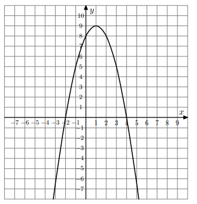Zbiorem wartości funkcji \(f\) jest przedział
Najmniejsza wartość funkcji \(f\) w przedziale \([-1,2]\) jest równa
Parabola o wierzchołku \(W=(-3,5)\) i ramionach skierowanych w dół może być wykresem funkcji określonej wzorem
Funkcja kwadratowa określona jest wzorem \(f(x)=x^2+x+c\). Jeżeli \(f(3)=4\), to
W układzie współrzędnych narysowano część paraboli o wierzchołku w punkcie A = (2, 4), która jest wykresem funkcji kwadratowej \(f\).
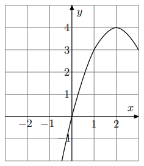Funkcja \(f\) może być opisana wzorem
Funkcja kwadratowa, której zbiorem wartości jest przedział \((-\infty,-3]\), może być określona wzorem
Wskaż rysunek, na którym przedstawiony jest wykres funkcji \( f(x)=(x-2)(x+4) \).
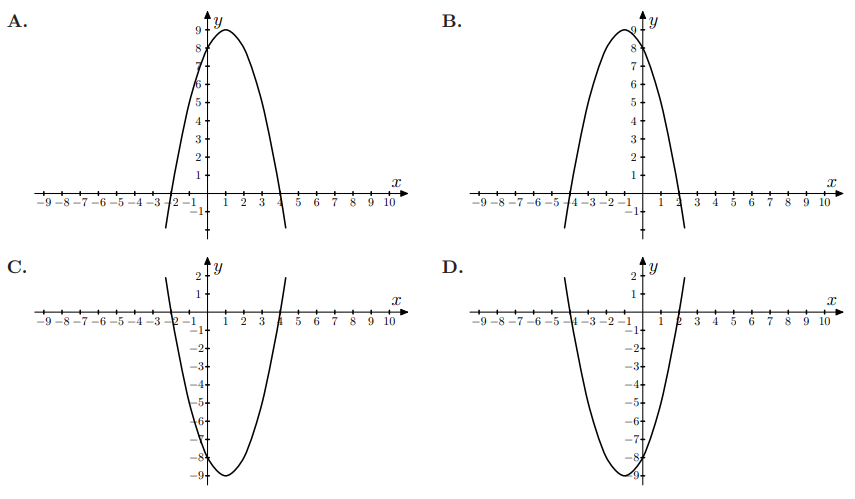Pierwsza współrzędna wierzchołka paraboli \( y=(x+2)(x-4) \) jest równa
Jednym z miejsc zerowych funkcji \( f(x)=3x^2+7x+c \) jest liczba \( -\tfrac{7}{3} \). Wówczas \( c \) jest równe
Na rysunku przedstawiono fragment wykresu funkcji kwadratowej \( f \).
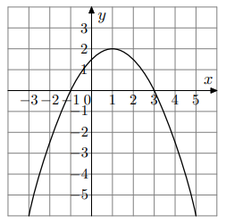Funkcja \( f \) jest określona wzorem
Wykresem funkcji kwadratowej \( f \) jest parabola o wierzchołku \( W=(5,7) \). Wówczas prawdziwa jest równość
Wierzchołkiem paraboli \( y=-3(x-2)^2+4 \) jest punkt o współrzędnych
Zbiorem wartości funkcji \( f(x)=x^2-4 \) jest
Wskaż wykres funkcji \( h(x)=(x-2)(x+4) \).
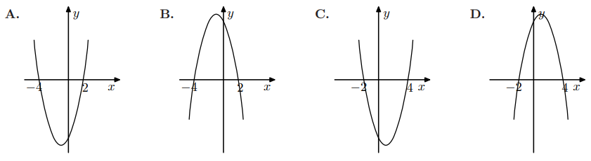Oś symetrii paraboli \( y=x^2-4x+2010 \) to
Wierzchołek paraboli \( y=x^2+4x-13 \) leży na prostej
Zbiorem wartości funkcji jest \((-\infty,3]\). Który rysunek?
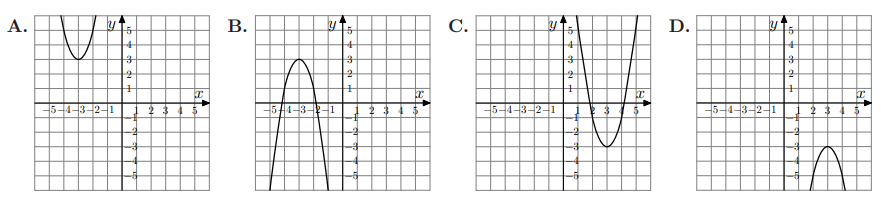Wierzchołek paraboli \( f(x)=-3x^2+3 \) to
Wierzchołek \( y=-3(x+1)^2 \) to
Do wykresu \( f(x)=x^2+x-2 \) należy punkt
Funkcja \( f(x)=3x^2+bx-5 \), \( b<0 \). Wybierz A/B/C oraz uzasadnienie 1/2/3.
Wariant:
Uzasadnienie:
Fragment paraboli (wierzchołek na rysunku). Który wzór?
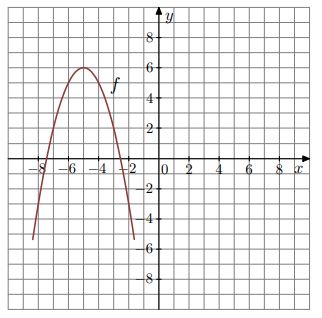Wskaż funkcję, której zbiorem wartości jest \([-2,+\infty)\).
Funkcja \( f(x)=(x-3)^2-2 \) nie ma punktów wspólnych z którą prostą?
Oś symetrii \( y=-x^2+4x-11 \) to
Funkcja zbiorem wartości \((-\infty,3]\):
Wykres \( f(x)=3(x+1)^2-4 \) nie ma punktów wspólnych z którą prostą?
Prosta y=a ma dokładnie jeden punkt wspólny z \( f(x)=-x^2+6x-10 \). Która wartość a?
Najmniejsza wartość \( f(x)=x^2+4x-3 \) na [0,3] to
Dana jest funkcja \( f(x)=x^2+5x+6 \). Dokończ zdania: wybierz A–D oraz E–H.
1. Postać kanoniczna:
2. Postać iloczynowa:
Funkcja \( f(x)=-2x^2+bx+c \) przyjmuje wartości dodatnie tylko dla \( x\in(-4,2) \). Oceń prawdziwość:
1) Osią symetrii paraboli jest prosta \( x=1 \).
2) Postać iloczynowa: \( f(x)=-2(x+4)(x-2) \).